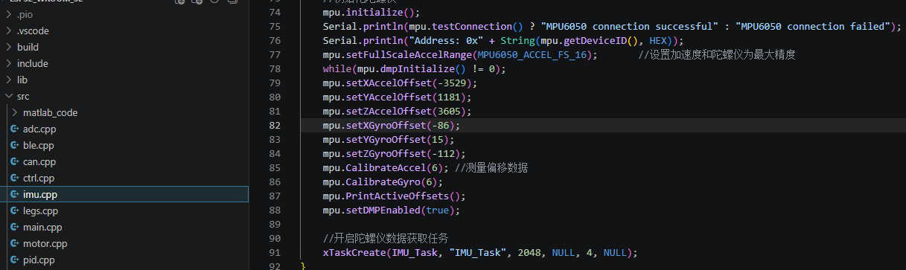
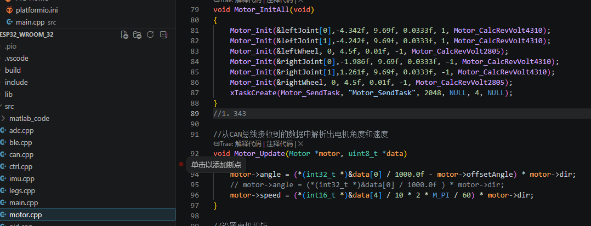
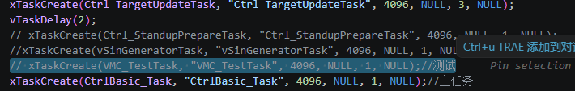

轮足平衡机器人控制系统 (Wheel-Legged Robot)
轮足平衡机器人控制系统 (Wheel-Legged Robot)
📑 目录
本项目是基于 ESP32 开发的轮足平衡（轮式双足）机器人控制固件。该系统利用 FreeRTOS 实时操作系统进行多任务管理，并结合 LQR（线性二次型调节器） 与 VMC（虚拟模型控制） 等先进控制算法，实现了机器人的动态自平衡、行走、转向、深蹲及跳跃等高级动态行为。
✨ 技术亮点
- 动态自平衡 (LQR): 基于 6 变量状态空间模型（机身倾角、位移、腿部角度及其导数），通过 LQR 算法实时计算车轮力矩，维持机器人站立平衡。
- 虚拟模型控制 (VMC): 将复杂的连杆结构简化为“虚拟腿”，通过控制虚拟弹簧和阻尼器的出力，实现对腿长和腿部角度的直观解耦控制。
- 跳跃与自动起身: 内置有限状态机，支持垂直跳跃。
- BLE 远程控制: 集成蓝牙低功耗（BLE）服务，支持网页Html 实时调节机器人位姿（速度、航向、腿长、跳跃），并观察状态和腿长。
- 反电动势补偿 (Back-EMF): 针对 4310 和 2804 无刷电机进行非线性反电动势补偿，确保在高速运动下力矩输出依然精准一致。
- 主动安全保障: 实时监测机身 pitch 和 roll 角。若检测到跌倒，系统将立即切断所有电机输出以防止硬件损坏。
- 电池压降补偿: 通过 ADS1115 高精度 ADC 监测电压，自动调整电机输出比例，消除因电池电量下降导致的控制增益波动。
🛠️ 硬件架构
- 控制器: ESP32 (使用Platformio框架 + FreeRTOS)。
- 惯性测量单元 (IMU): MPU6050 (I2C 总线)，使用 DMP 处理姿态，并进行软件偏航漂移补偿。
- 模数转换器 (ADC): ADS1115 (I2C 总线)，用于 4S 锂电池组的电压监测。
- 执行器 (CAN 总线):
- 4x 4310 无刷电机: 驱动髋部与膝部关节（连杆结构）。
- 2x 2805 无刷电机: 驱动底部轮组。
- 通信: 1Mbps 高速 CAN 总线 (ESP32 TWAI)。
📂 核心代码模块说明
| 模块名称 | 功能描述 |
|---|---|
main.cpp |
系统入口。初始化外设、CAN 总线、IMU，并启动 FreeRTOS 任务流。 |
ctrl.cpp |
控制核心。包含 4ms 周期的控制环路、LQR 平衡计算、VMC 映射、串级 PID 控制以及跳跃状态机。 |
motor.cpp |
电机抽象层。管理电机减速比、安装偏移角、限压及反电动势数学模型。 |
legs.cpp |
运动学正解。根据关节电机编码器反馈，计算当前虚拟腿的长度、角度及其导数。 |
can.cpp |
TWAI 驱动实现。负责异步接收电机反馈报文并下发电压控制指令。 |
imu.cpp |
处理 MPU6050 数据，提供稳定的机身欧拉角及角速度，支持 YAW 轴漂移修正。 |
ble.cpp |
蓝牙服务器。处理来自 App 的 7 字节控制指令包，并上报机器人状态数据。 |
pid.cpp |
通用 PID 算法实现。支持死区设置、积分限幅、积分分离及误差低通滤波。 |
adc.cpp |
监测电源电压，动态计算 motorOutRatio 以保证控制系统的一致性。 |
🎮 蓝牙控制协议
机器人广播名称为 Bot。控制指令采用 7 字节定长数据包：[0xA5, 指令码, 数值, 预留1, 预留2, 预留3, 0x5A]。
- 前进/后退/旋转: 实时调整目标速度和航向角。
- 身高调节: 控制虚拟腿长在 0.05m 至 0.17m 之间变换。
- 跳跃: 发送
0x08触发爆发力输出序列。 - 状态反馈: 机器人每 100ms 通过 NOTIFY 方式向 App 推送当前腿长、跳跃状态等遥测数据。
🔧 开发环境与依赖
- PlatformIO / Vscode: 建议使用 PlatformIO 配合 ESP32 核心进行开发。
- 必需库文件:
Adafruit_ADS1X15(用于 ADC)。MPU6050(带有 MotionApps20 支持的库)。- ESP32 自带的蓝牙与 TWAI 驱动。
- Matlab 支持:
- 项目的 LQR K 矩阵和部分复杂公式位于
include/matlab_code/下，由 Matlab 符号计算工具箱导出，请勿直接修改相关头文件。
- 项目的 LQR K 矩阵和部分复杂公式位于
完整调试流程
1.1调试准备
调试前需要保证驱动板，主板正常工作。
驱动板事项
-
烧录正常，stlink烧录器或者/daplink等供电时，下载完程序后offline灯常亮，旁边的灯闪烁
-
正负极无短路，各芯片引脚无虚汗
-
芯片电压正常为3.3v
-
AS5600：检测磁铁位置的芯片，一定要保证I2C的SDA和SCL引脚都为高电平，否则通信失败，读不到角度值
-
轮子电机使用不同，孔位可能存在微妙差异，可以使用转接板，以下会附上2804电机转接板STL文件
-
注意TJA1050T不要焊反，can通信需和主板一起通信
-
记得修改极对数
-
驱动板装上电机后接上串口进行校准，发送erase擦除重新校准，setid:设置id，vot:发送电压，需供电

主板事项
-
MPU6050是否焊好
-
串口CP2102是否能正常通信，虚焊会导致下载程序失败，如果下载失败可以焊CH340试试，下载时需要先按住boot引脚不放和按一下rst引脚松开后下载，这块主板没有rst按键，可以拿锡丝接地或者esp32上的金属外壳
-
检查5v转3v3是否正常
-
can通信是否正常，正常后驱动板只有一个led常亮

1.2 IMU校准

给esp32主板放平后使用typec供电，点击Monitor监视，按复位按键会打印出偏移数据，填进去即可
1.3机器人安装事项

- ID不可重复，将注释掉的地方取消注释将上一行注释，观察dir正负

- 烧录后先确定dir为1或者-1，具体方法为观察串口输入的角度值，向正方向的角度旋转每个关节，如果输出对应关节的角度变大，则dir为1，反之dir为-1；先在代码中把刚刚确定的dir填写进去再编译烧录一次；
- 确定好dir以后将4个关节都旋转到朝车头水平方向，记录下输出的角度，如果dir为1，则offsetAngle值则为输出角度，如果dir为-1，则offsetAngle为输出角度的负值；（如果车辆已经组装，部分关节无法旋转到水平超前的角度，则可以前关节朝前，后关节朝后，观察数据后关节的角度减去3.141得出的数据就是后关节的偏移角度，再根据dir的正负进行记录）
- 通过Motor_SendTaslk直接发送电压来观察CAN是否正常
- 轮部电机，将车身前倾，轮子应当向前，反则修改dir
2.1调试髋部

- 将所选取消注释，其他任务注释，取消main函数里的控制代码注释，VMC_TestTask,中有左右单腿，和双腿测试，逐个测试
- 修改leglengthPID使腿部具有一定抗干扰能力，增大P响应增快
2.2调试轮部
调整第一行的参数会带来不同测试结果，分别与 theta dTheta x, dx, phi, dPhi相乘
调试轮子时可以把髋关节电机线拔了
1 | float kRatio[2][6] = { |
保持小范围内移动即可
2.3保护措施
1 | bool check_Fallground(){ |
根据角度来立即停止输出，保护电机
3.1单腿起立

-
腿部分开算PID
-
PID_CascadeCalc(&leftlegLengthPID,target.leftlegLength, leftlegLength, dleftlegLength); PID_CascadeCalc(&rightlegLengthPID,target.rightlegLength, rightlegLength, drightlegLength);1
2
3
4
5
6
7
8
9
10
11
12
13
14
15
16
17
18
19
20
21
22
23
3. 通过分别给target.length赋值
### 3.2双腿起立
同单腿，一起给值就好
[](https://github.com/user-attachments/assets/928c907b-2759-4c30-b4f5-79027ee33e45)
### 3.3跳跃
参考达妙状态机，分为3个状态，下压，弹起，收缩转常态
跳跃时可以给目标值大一点，保证力足够
记得锁定yaw目标+清零yawPID输出
```c
target.yawAngle = imuData.yaw;
yawPID.output = 0;
target.position = stateVar.x;
target.speed = 0.0f;
效果一般，力不太够
4.1html蓝牙/键鼠控制

也可以使用其他遥控器控制，这里方便看状态
系统知识总结
1.VMC
(16 条消息) 五连杆运动学解算与VMC - 知乎
1.1什么是VMC
VMC指的是virtual model control,是一种虚拟模型控制，用来把“想要的运动”
转成每个关节该输出的力矩。
不直接控制单个关节角度，而是虚拟构建弹簧阻尼组成整体模型，根据姿态高度速度，计算出维持稳定所需要的目标合力，通过雅可比矩阵映射，把整体力分配各给腿部关节，驱动轮执行。
1.2.五连杆运动学解算
已知髋关节A,E两个电机角度以及大小腿长度，可以推算出五连杆机构末端C的位置,取A,E中点位置即可计算出虚拟的L0，theta0.(具体计算过程看玺佬推导)

雅可比矩阵 实际描述的是两坐标微分的线性映射关系，因此我们可以通过计算速度映射关系来得到雅可比矩阵减少计算量。
对xb，xd关系式求导，求出theta2的导数，再将其代入xc，yc导数的关系式中化简即可得到所需的关系式